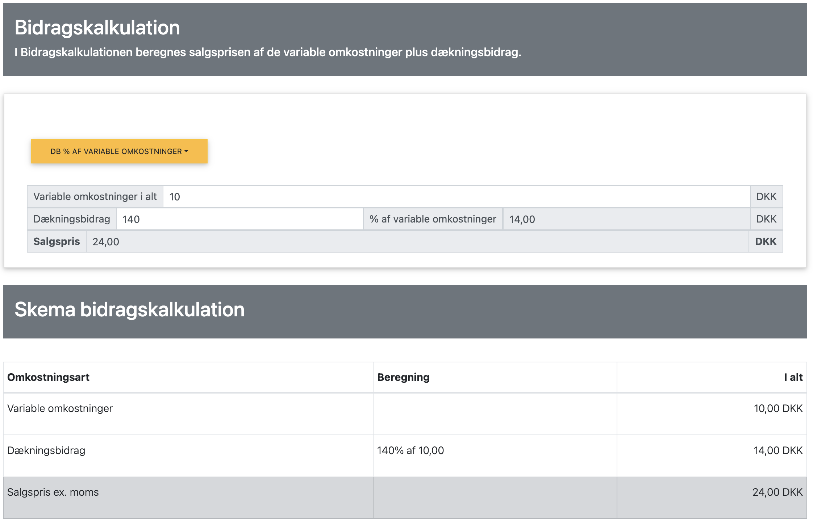
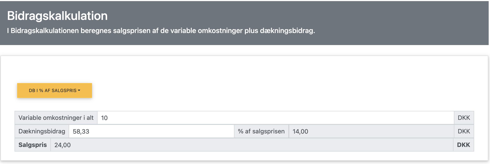
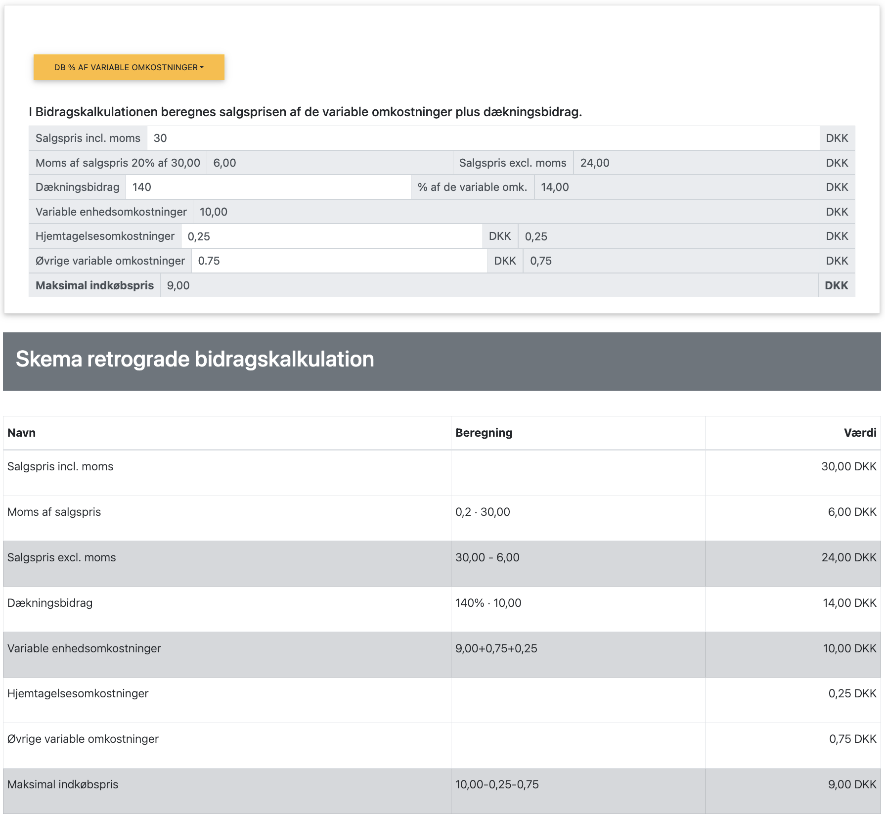

Bidragskalkulation og Retrograd Kalkulation

Bidragskalkulation er en metode til at beregne salgspriser baseret på variable omkostninger plus et dækningsbidrag.
Retrograd kalkulation er en "baglæns" beregning, hvor man starter med markedsprisen (oftest inkl. moms) og arbejder sig tilbage til den maksimale indkøbspris.
I dette kapitel benytter vi følgende forkortelser:
- P = Salgspris (bemærk: I dette kapitel antages salgspriser som udgangspunkt at være inklusive moms medmindre andet specifikt er nævnt. Beregninger foretages dog typisk på basis af priser eksklusive moms.)
- VE = Variable enhedsomkostninger
- VO = Variable omkostninger (VE × X)
- FO = Faste omkostninger
- DB = Dækningsbidrag (P - VE)
- DG = Dækningsgrad ((DB/P) × 100%)
- X = Mængde
- TO = Totale omkostninger (FO + VO)
I dette kapitel fokuserer vi på:
- Hvordan virksomheder kan beregne salgspriser ud fra variable omkostninger
- Forskellen mellem bidragskalkulation og retrograd kalkulation
- Praktisk anvendelse af kalkulationsmetoderne
- Et gennemgående beregningseksempel fra en isbutik
Grundlæggende principper for bidragskalkulation
Ved bidragskalkulation beregnes salgsprisen ud fra:
- Variable enhedsomkostninger (VE)
- Plus et dækningsbidrag (DB) der skal dække:
- Faste omkostninger
- Ønsket overskud
Grundformlen for bidragskalkulation er:
Salgspris = Variable enhedsomkostninger + Dækningsbidrag pr. enhed
Dækningsbidraget kan angives som:
- Et fast beløb pr. enhed
- En procentsats af de variable omkostninger
- En ønsket dækningsgrad af salgsprisen
Eksempler på bidragskalkulation fra virksomheder
| Virksomhed | Produkt | Variable omkostninger (VE) | Dækningsbidrag (DB) (% af VE) |
Salgspris (inkl. moms) |
|---|---|---|---|---|
| Joe & The Juice | Juice | 12 kr. (frugt, emballage) | 275% | (12+33)*1,25 = 56,25 kr. |
| Lagkagehuset | Croissant | 8 kr. (ingredienser, energi) | 275% | (8+22)*1,25 = 37,50 kr. |
| Normal | Shampoo | 15 kr. (indkøb, fragt) | 66,7% | (15+10)*1,25 = 31,25 kr. |
| Flying Tiger | Notesbog | 8 kr. (materialer, fragt) | 150% | (8+12)*1,25 = 25,00 kr. |
Gennemgående beregningseksempel: Isbutik
Lad os se på et konkret eksempel fra en isbutik, der skal fastsætte prisen på deres isvafler:
Forudsætninger:
- Variable enhedsomkostninger:
- Råvarer (is, vaffel): 5 kr.
- Emballage: 1 kr.
- El til frysere pr. enhed: 0,50 kr.
- Spild (2% af råvarer): 0,10 kr.
- Variable lønomkostninger: 3,40 kr.
- Total VE = 10 kr.
- Ønsket dækningsbidrag (DB): 140% af VE.
(Bemærk: Fødevarer som is har ofte et relativt højt dækningsbidrag i procent af de variable omkostninger.) - Faste omkostninger pr. måned: 30.000 kr.
- Forventet salg: 5.000 isvafler pr. måned
 Figur 1: Beregning af bidragskalkulation i appen, bemærk den orange knap står default til DB af VE de variable omkostninger.
App beregning af bidragskalkulation
Trin 1: Beregning af salgspris med bidragskalkulation
Beregning af salgspris ud fra ønsket dækningsbidrag (140% af VE):
Isbutikken ønsker et dækningsbidrag (DB), der er 140% af de variable enhedsomkostninger (VE).
Først findes salgsprisen eksklusive moms (P ex. moms):
DB = VE * 140% = 10 kr. * 1,40 = 14 kr.
P ex. moms = VE + DB = 10 kr. + 14 kr. = 24 kr.
Dernæst beregnes salgsprisen inklusive moms (P inkl. moms):
P inkl. moms = P ex. moms * (1 + momssats) = 24 kr. * 1,25 = 30 kr.
DB i % af salgsprisen også kaldet dækningsgrad (DG):
Selvom udgangspunktet var DB som % af VE, kan vi beregne den DB i % af salgsprisen:
DG = (DB / P ex. moms) × 100% = (14 kr. / 24 kr.) × 100% ≈ 58,33%
Salgsprisen sættes altså til 30 kr. inkl. moms for at opnå et dækningsbidrag på 14 kr., hvilket svarer til 140% af VE og DB på ca. 58,33% af salgsprisen ekskl. moms, dvs. dækningsgraden er 58,33%.
 Figur 2: Beregning af bidragskalkulation i appen, bemærk den orange knap står her til DB i % salgsprisen også kaldet dækningsgrad (DG).
Trin 2: Break-even analyse
Break-even mængde:
FO = DB × X
30.000 = 14 × X
X = 30.000 / 14 ≈ 2.143 isvafler pr. måned (afrundet op)
Med et forventet salg på 5.000 isvafler pr. måned vil butikken være godt over break-even.
Forventet resultat pr. måned:
Omsætning (ex. moms) = P ex. moms × X = 24 × 5.000 = 120.000 kr.
Variable omkostninger = VE × X = 10 × 5.000 = 50.000 kr.
Dækningsbidrag = DB × X = 14 × 5.000 = 70.000 kr.
Resultat = DB × X - FO = 70.000 - 30.000 = 40.000 kr.
Retrograd kalkulation
Nu antager vi, at isbutikken overvejer at outsource produktionen af is. Markedsprisen for lignende isvafler inklusive moms er 30 kr. Butikken ønsker et dækningsbidrag (DB) svarende til 140% af de samlede variable omkostninger (VE) for den outsourcede is.
Butikken bruger retrograd kalkulation til at bestemme den maksimale indkøbspris for den outsourcede is.
Forudsætninger for retrograd kalkulation:
- Markedspris inkl. moms: 30,00 kr.
- Momssats: 25%
- Ønsket dækningsbidrag (DB): 140% af VE
- Hjemtagelsesomkostninger: 0,25 kr.
- Øvrige variable omkostninger (f.eks. servering, spild): 0,75 kr.
Retrograd beregning:
1. Find salgspris eksklusive moms (P ex. moms):
P ex. moms = P inkl. moms / (1 + momssats)
P ex. moms = 30,00 kr. / 1,25 = 24,00 kr.
2. Find det samlede rådighedsbeløb til variable omkostninger (VE) ud fra P ex. moms og det ønskede forhold mellem DB og VE:
Vi ved, at P ex. moms = VE + DB, og at DB = 1,40 * VE
Så, P ex. moms = VE + (1,40 * VE) = 2,40 * VE
VE = P ex. moms / 2,40 = 24,00 kr. / 2,40 = 10,00 kr.
3. Beregn det tilsvarende dækningsbidrag (DB):
DB = 1,40 * VE = 1,40 * 10,00 kr. = 14,00 kr.
(Kontrol: VE + DB = 10,00 + 14,00 = 24,00 kr., hvilket matcher P ex. moms)
4. Beregn den maksimale indkøbspris for selve isen:
Maksimal Indkøbspris = Samlet VE - Hjemtagelsesomkostninger - Øvrige variable omkostninger
Maksimal Indkøbspris = 10,00 kr. - 0,25 kr. - 0,75 kr. = 9,00 kr.
 Figur 3: Beregning af retrograd kalkulation i appen, bemærk den orange knap står her til DB i % variable omkostninger.
App beregning af bidragskalkulation
Opsummering i tabelform:
| Post | Beregning | Værdi |
|---|---|---|
| Salgspris inkl. moms | Givet | 30,00 kr. |
| - Moms (25% af P ex. moms) | 30,00 / 1,25 * 0,25 | 6,00 kr. |
| = Salgspris ex. moms | 30,00 - 6,00 | 24,00 kr. |
| - Dækningsbidrag (140% af VE)* | 10,00 * 1,40 | 14,00 kr. |
| = Til dækning af variable omkostninger (VE) | 24,00 / 2,40 | 10,00 kr. |
| - Hjemtagelsesomkostninger | Givet | 0,25 kr. |
| - Øvrige variable omkostninger | Givet | 0,75 kr. |
| = Maksimal indkøbspris | 10,00 - 0,25 - 0,75 | 9,00 kr. |
Butikken kan altså maksimalt betale 9,00 kr. pr. enhed for den outsourcede is (indkøbspris), hvis de skal opnå et dækningsbidrag på 140% af de samlede variable omkostninger (inkl. hjemtagelse og øvrige) ved en markedspris på 30 kr.
Sammenligning af de to kalkulationsmetoder
| Parameter | Bidragskalkulation (egen produktion) | Retrograd kalkulation (outsourcing) |
|---|---|---|
| Udgangspunkt | Variable omkostninger + Ønsket DB (% af VE) | Markedspris + Ønsket DB (% af VE) |
| Retning | Forlæns (omkostninger → pris) | Baglæns (pris → maks. indkøbspris) |
| Salgspris (ekskl. moms) | 24 kr. (fastsat) | 24 kr. (givet af marked) |
| Variable enhedsomk. (VE) - Detaljer | 10 kr. (Total) | 10,00 kr. (beregnet ved DB=140% af VE) |
| Råvarer (is, vaffel) | 5,00 kr. | - (Dækkes af indkøbspris) |
| Emballage | 1,00 kr. | - (Dækkes af indkøbspris) |
| El til frysere pr. enhed | 0,50 kr. | - (Dækkes af indkøbspris) |
| Spild (2% af råvarer) | 0,10 kr. | - (Dækkes af indkøbspris) |
| Variable lønomkostninger | 3,40 kr. | - (Dækkes af indkøbspris) |
| Hjemtagelsesomkostninger | - | 0,25 kr. |
| Øvrige variable omkostninger | - | 0,75 kr. |
| Maksimal Indkøbspris | - | 9,00 kr. |
| Variable enhedsomkostninger (VE) - Total | 10 kr. | 10,00 kr. (beregnet ved DB=140% af VE) |
| Dækningsbidrag pr. enhed | 14 kr. (140% af VE) | 14,00 kr. (140% af VE) |
| Dækningsgrad | 58,33% (beregnet) | 58,33% (beregnet) |
| Primær beslutningsvariabel | Salgspris | Maksimal indkøbspris |
Sammenfatning af kapitlet
Bidragskalkulation og retrograd kalkulation er to komplementære metoder til prisfastsættelse og omkostningsstyring:
Nøgleobservationer:
- Bidragskalkulation er velegnet når:
- Virksomheden har prissætningsfleksibilitet
- Variable omkostninger er velkendte
- Man ønsker at sikre et bestemt dækningsbidrag
- Retrograd kalkulation er velegnet når:
- Markedsprisen er givet (husk at fratrække moms, hvis den er inkl.)
- Man skal vurdere outsourcing
- Man skal forhandle med leverandører, så man ved hvad man højst kan betale, for at opnå et bestemt dækningsbidrag.
- Begge metoder:
- Fokuserer på dækningsbidrag
- Kan bruges til break-even analyse
- Er vigtige værktøjer i økonomistyring
I næste kapitel skal vi se på fordelingskalkulation (Full cost kalkulation), som er en anden metode til prisfastsættelse, denne metode er mere kompleks og kræver en større mængde data. Bidragskalkulation her er en simpel og hurtig metode, som kan bruges til at bestemme prisen på et produkt.